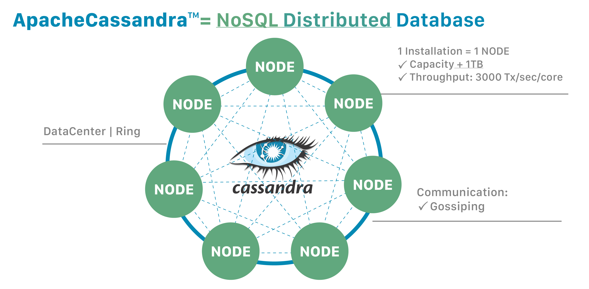
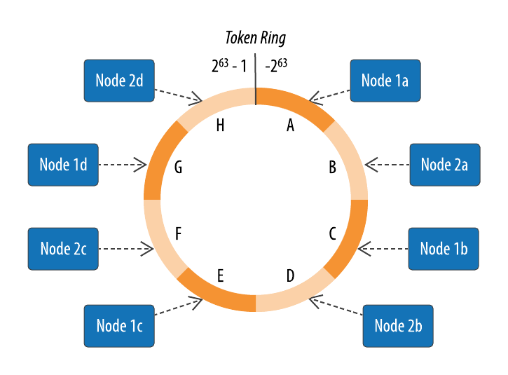
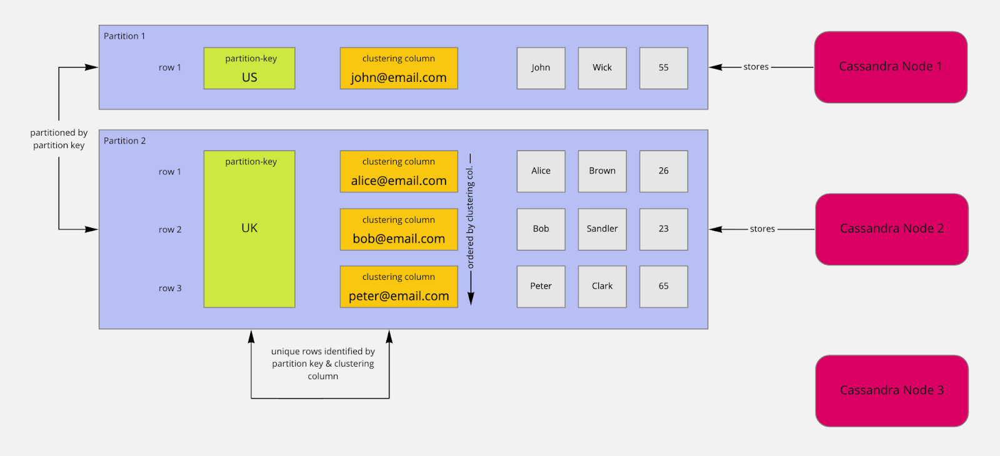

Wide-column database system (Apache Cassandra)
This document covers the wide-column database system, with Cassandra queries that are used via AWS Keyspaces.
An abridged version of the Cassandra timeline
2008: First developed to address Facebook scaling needs by improving search function.
2008: Released by Facebook as an open-source project.
2009: Apache picked up Cassandra as an Incubator project, and graduated in 2010.
2011: Cassandra Query Language (CQL) is introduced (v0.8).
2021: Cassandra 4.0 was released. In Patrick McFadin’s own words, > This is an important milestone in the lifecycle of a database project that has come into its own as an important database used around the world.
Architecture of Cassandra
 |
|---|
| Apache Cassandra distributed database schema. |
Decentralized multiple nodes
Each node can receive request (query) and coordinates the request:
If the coordinator node contains the data, it may return the results.
If the coordinator node does not contain the data, it can calculate which other node does (via a consistent hashing algorithm).
If consistency level is requested, the coordinator node queries the data from replica nodes.
A note about the hashing algorithm:
Data are assigned to nodes by a hash function to calculate a token for the partition key.
Each node owns a range of the tokens.
Example through the following query:
SELECT subject_id, token(subject_id) FROM de300_demo.patient_tbl; |
|---|
| Token ring (Fig 6.2 from Carpenter, 2022). |
Partitions
Recall what a primary key is in a relational database table.
Cassandra calls the main entity a Keyspace, as a group of tables with some relationships (analogous to database in a relational database system).
The primary key in a Cassandra table consists of - a mandatory partition key, and - an optional set of clustering columns.
Example of partitioning:
>>> CREATE TABLE de300keyspaces.users_by_country (
country text,
user_email text,
first_name text,
last_name text,
age smallint,
PRIMARY KEY ((country), user_email)
);Table Users | Legend: p - Partition-Key, c - Clustering Column
country (p) | user_email (c) | first_name | last_name | age
----------------------------------------------------------------
US | john@email.com | John | Wick | 55
UK | peter@email.com | Peter | Clark | 65
UK | bob@email.com | Bob | Sandler | 23
UK | alice@email.com | Alice | Brown | 26Why use country as the mandatory key? - The most important bit to understanding is scalability. - If we often query the user database for specific countries, this may be a good idea.
 |
|---|
| Illstration for partition key. |
The main role of the partition key is to distribute data evenly among nodes.
An example query that will work really efficiently is the following:
>>> SELECT * FROM de300keyspaces.users_by_country WHERE country='US';
An example query that will work poorly would be the following:
>>> SELECT * FROM de300keyspaces.users_by_country WHERE age > 50;
In fact, the query above will not run. Queries without conditions (WHERE) or use conditions that don’t use the partition key should be avoided.
With caution: You may force this kind of query to run with the following:
>>> SELECT * FROM de300keyspaces.users_by_country WHERE age > 50 ALLOW FILTERING;
Replication
Data are duplicated and stored in different nodes (replicas). By default, a replication of three “availability zones” is supported in AWS Keyspace.
When a keyspace is created, a query such as the following requires specifying a replication factor.
# AWS Keyspace
>>> CREATE KEYSPACE IF NOT EXISTS "de300keyspaces"
WITH REPLICATION = {'class': 'SingleRegionStrategy'};# General Cassandra
>>> CREATE KEYSPACE de300keyspaces
WITH REPLICATION = {
'class' : 'NetworkTopologyStrategy',
'datacenter1' : 3
};A replication factor of 3 means that for each row of data, there are three copies stored on different nodes.
>>> CONSISTENCY ONE;
>>> CONSISTENCY LOCAL_ONE;
>>> CONSISTENCY LOCAL_QUORUM;Note: Strong consistency means \[[\textrm{read-consistency-level}] + [\textrm{write-consistency-level}] > [\textrm{replication-factor}].\]
Consistency
Once we have replicates, the notion of consistency beceomes important. As we have seen before, strong consistency means only one state of your data can be observed at any time in any location. Cassandra generally runs an eventually consistent model.
The biggest question is how important strong consistency in your use case.
Read/Write consistency level means how many of the read/write operations (replica) are completed.
Consistency for all queries can be set by the following query examples:
>>> CONSISTENCY ONE;
>>> CONSISTENCY LOCAL_QUORUM;Pre-sorting
Recalling that the primary key consists of - a mandatory partition key (1+ columns), and - an optional set of clustering columns (0+ columns).
Cassandra sorts the data by default. Using the same example from above:
>>> CREATE TABLE de300keyspaces.users_by_country_sorted_by_age_asc (
country text,
user_email text,
first_name text,
last_name text,
age smallint,
PRIMARY KEY ((country), age, user_email)
) WITH CLUSTERING ORDER BY (age ASC);>>> SELECT * FROM de300keyspaces.users_by_country_sorted_by_age_asc WHERE country='UK';
country | age | user_email | first_name | last_name
---------+-----+------------------+------------+-----------
UK | 20 | bob@email.com | Bob | Sandler
UK | 30 | peter@email.com | Peter | Clark
UK | 40 | alice@email.com | Alice | BrownNotice that age is included as a clustering column, and sorted.
The order of your clustering columns matters!
It is now possible to query the table by - country - country, age - country, age, user_email
But querying by country and user_email becomes inefficient.
Deletion of data
When data are replicated, deletion of data becomes complicated.
Cassandra sets up tombstone to prevent reintroducing any deleted data.
- Typically a tombstone is placed on the values to be deleted (i.e., an update).
- (In a relational database,) an update statement is issued to change values to deleted in a row.
- The tombstones are kept for some length of time (
gc_grace_seconds = 864000by default).
Node failure detection
Since a Cassandra ring (or cluster of nodes) contains potentially many nodes (which may fail), we need a mechanism to check if any individual node is failing.
A gossip protocol system is employed in Cassandra to detect failures in the ring. When any node spins up, it registers itself with the gossiper to receive the state of the cluster.
The gossip protocol goes as follows: 1. Once per second, the gossiper will choose a random node in the cluster and initialize a gossip session.
(Each round of gossip requires three messages back-and-forth.) 2. The gossip initiator sends a GossipDigestSyn message. 3. When the friend receives the message, it returns a GossipDigestAck message. 4. When the initiator receives the ack message, it sends a GossipDigestAck2 message to complete the round of gossip. 5. If there is no response, the initiator convicts the friend by marking it as dead in its local list and logging that fact.
When is a failure detected? Cassandra implements the \(\phi\) accrual failure detector (Hayashibara et al., 2004). - A suspicion level is maintained by the failure monitoring system. - Each node has a Phi suspicion level attached. - If the suspicion level (e.g., number of gossips missed) goes beyond Phi in the node, then failure is declared.
Main take-aways
- The strength of Cassandra is in horizontal scalability, balancing consistency and availability.
- Implication:
- No
JOINstatements - No nested query, subquery
- Tables are designed for queries, not the other way around.
- No
References
Carpenter, J., & Hewitt, E. (2022). Cassandra. “O’Reilly Media, Inc.”.
Hayashibara, N., Defago, X., Yared, R., & Katayama, T. (2004, October). The/spl phi/accrual failure detector. In Proceedings of the 23rd IEEE International Symposium on Reliable Distributed Systems, 2004. (pp. 66-78). IEEE.